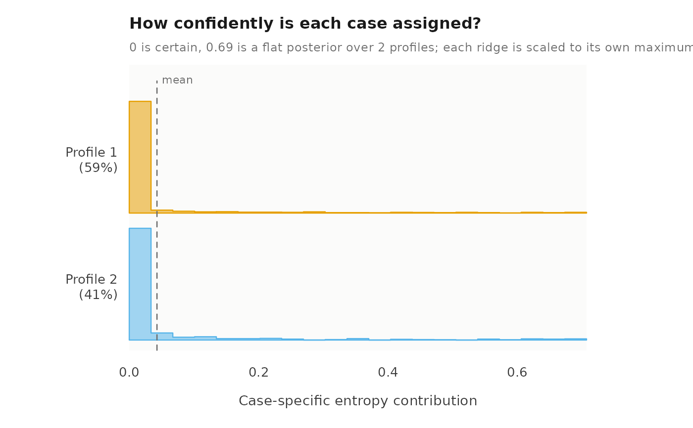
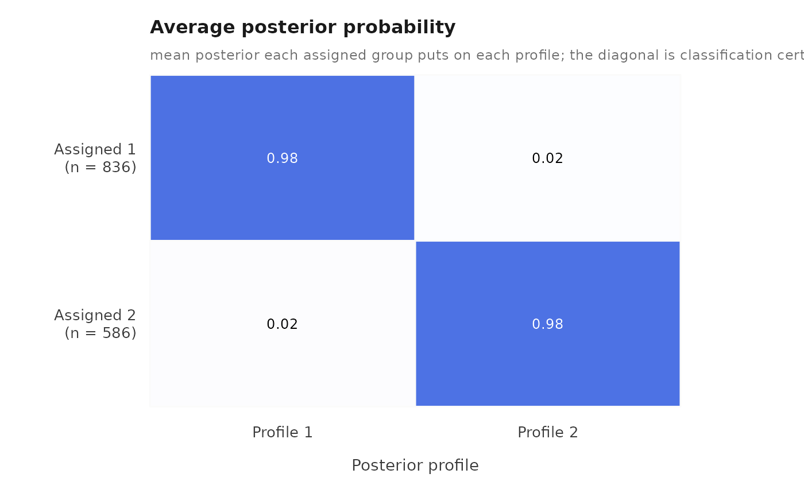
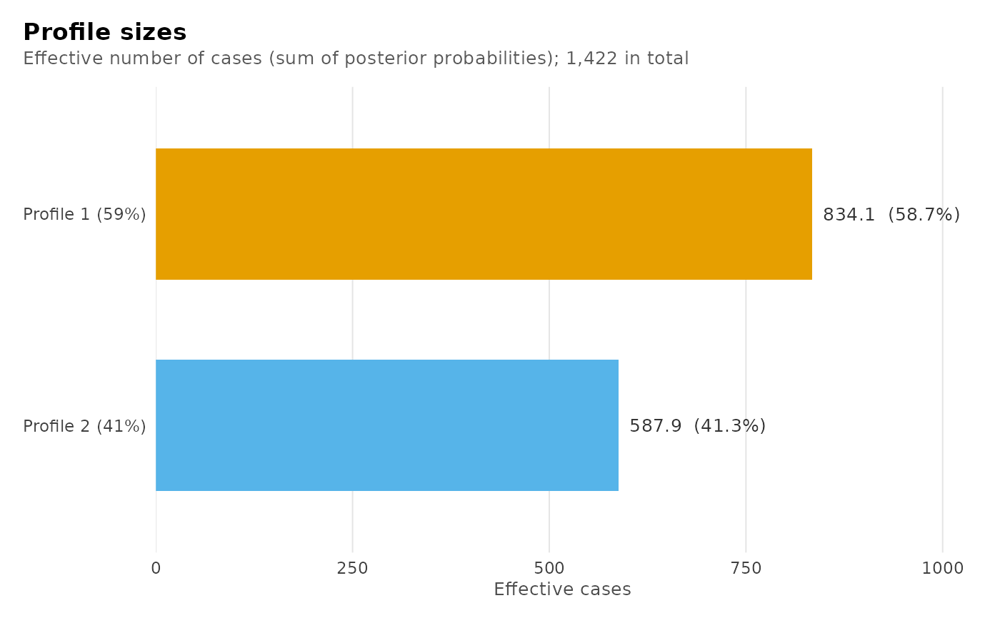
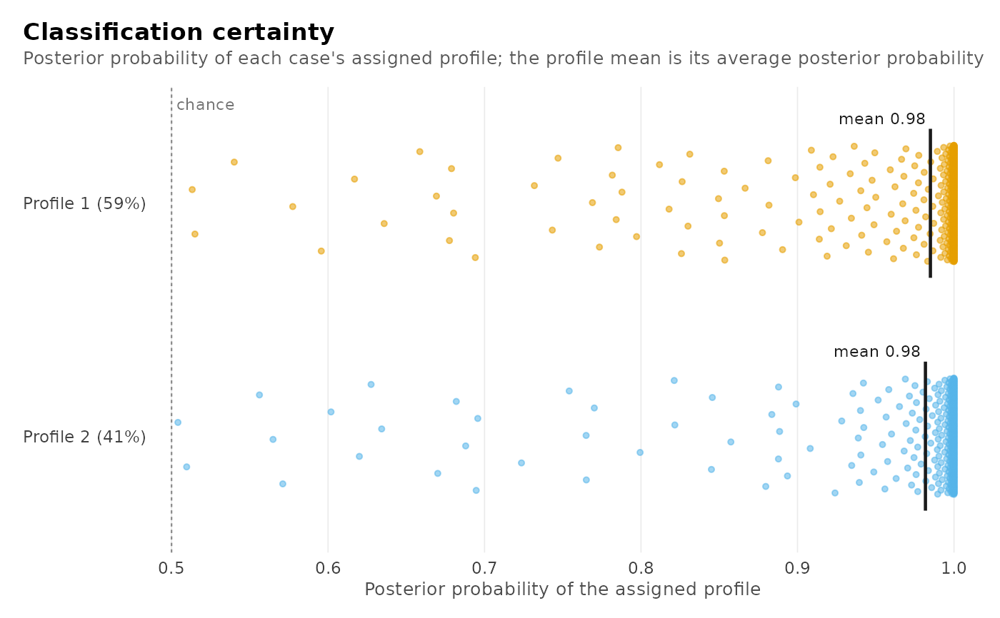

summary() reports what a model estimated. This reports whether to believe
it: how sharply the posterior separates the classes, how big each class
actually is, how confidently each unit was assigned, and whether the
within-profile independence the model assumes survives contact with the data.
Usage
diagnostics(x, data = NULL, plots = TRUE, by = c("profile", "overall"), ...)
# S3 method for class 'multilpa_diagnostics'
as.data.frame(x, row.names = NULL, optional = FALSE, ...)
# S3 method for class 'multilpa_diagnostics'
print(x, ...)
# S3 method for class 'multilpa_diagnostics'
plot(x, ...)Arguments
- x
A fitted model of this package.
- data
Optional. The data the model was fitted to. A fit carries the columns it was built from, so this is only needed to override them.
- plots
TRUE, the default, also draws the four classification plots (effective profile sizes, posterior probabilities of the assigned profiles, case entropy, and the average posterior probability matrix), as printingplot()on the result does. Without the ggplot2 package a message says so and the tables are still returned.FALSEreturns the tables only.- by
"profile", the default, assesses each profile's bivariate residuals separately;"overall"pools them. It is the one argument of a gathered table this function forwards, because it is the one that changes what a gathered table means rather than which fit it is taken from. Thelevelthe classification tables use is not an argument here: it follows from whether the fit has discrete group classes.- ...
For
diagnostics(), nothing further is accepted. An argument this function cannot forward raises an error of classlatents_bad_argumentnaming it, rather than being dropped on the way to a table that then means something other than what was asked for. Forplot(), nothing further is accepted either; style the returned plots with ggplot2.- row.names, optional
Passed to the base generic;
row.namesis applied to the returned table.
Value
An object of class multilpa_diagnostics. Read its tables with
get_results(result, what = ), which offers "entropy", "classification",
"average_posteriors", "residuals" and "all", and never with $. A
model family that has no bivariate residuals leaves that table out of
"all", and asking for it by name raises latents_no_group_classes.
print() returns the object invisibly, having printed one line per
diagnostic: relative entropy, smallest class, lowest average posterior and
largest residual, at each level the fit has. plot() returns every
classification plot as a latents_plots list of ggplot objects – the
effective profile sizes, the posterior probability of each case's assigned
profile, each case's relative entropy, and the average posterior
probability matrix – that draws all four when printed.
as.data.frame() returns the entropy table, the primary one.
Details
It gathers the four classification tables of get_results() — "entropy",
"classification", "average_posteriors" and "residuals" — and prints
one line of reading per diagnostic rather than four differently shaped
tables. The tables themselves come back from get_results() on the result, or
on the fit.
See also
get_results() for these tables and every other one, descriptives()
for the before-the-fit counterpart, and summary() for what the model
estimated rather than whether to trust it.
Examples
fit <- multilpa(
course_engagement,
vars = c("browse", "lectures", "forum_read", "forum_post", "attendance"),
id = "student", n_profiles = 2, n_group_classes = 2, n_starts = 4,
seed = 1
)
quality <- diagnostics(fit)




quality
#> Classification quality: 2 profiles, 2 group classes
#>
#> Relative entropy individuals 0.938 groups 0.940
#> Smallest class individuals 587.9 (41.3%) groups 34.5 (32.5%)
#> Lowest avg posterior individuals 0.982 groups 0.969
#> Largest residual 0.234 (lectures, attendance; profile_1)
#>
#> Tables: get_results(x, what = "entropy" | "classification" |
#> "average_posteriors" | "residuals" | "all"). plot(x) draws them.
get_results(quality, what = "classification")
#> level class n_modal proportion_modal estimated_n estimated_proportion
#> 1 individuals 1 836 0.5879044 834.09578 0.5865652
#> 2 individuals 2 586 0.4120956 587.90422 0.4134348
#> 3 groups 1 71 0.6698113 71.51853 0.6747031
#> 4 groups 2 35 0.3301887 34.48147 0.3252969
#> average_posterior odds_correct_classification
#> 1 0.9849349 46.08135
#> 2 0.9817573 76.35264
#> 3 0.9920142 59.89166
#> 4 0.9689851 64.80071
get_results(diagnostics(fit, by = "overall"), what = "residuals")



 #> profile indicator_1 indicator_2 kind observed expected residual
#> 1 overall forum_read attendance gaussian 0.215876301 0 0.215876301
#> 2 overall lectures attendance gaussian 0.192343503 0 0.192343503
#> 3 overall browse attendance gaussian 0.180765960 0 0.180765960
#> 4 overall forum_post attendance gaussian 0.172391933 0 0.172391933
#> 5 overall browse forum_read gaussian 0.062652530 0 0.062652530
#> 6 overall browse forum_post gaussian -0.025110724 0 -0.025110724
#> 7 overall browse lectures gaussian -0.021258479 0 -0.021258479
#> 8 overall forum_read forum_post gaussian 0.019861247 0 0.019861247
#> 9 overall lectures forum_post gaussian 0.017095209 0 0.017095209
#> 10 overall lectures forum_read gaussian 0.001925371 0 0.001925371
#> effective_n statistic df p_value p_adjusted
#> 1 1422 8.26195538 NA 1.433053e-16 1.433053e-16
#> 2 1422 7.33689497 NA 2.186060e-13 2.186060e-13
#> 3 1422 6.88504191 NA 5.777052e-12 5.777052e-12
#> 4 1422 6.55944109 NA 5.400982e-11 5.400982e-11
#> 5 1422 2.36319212 NA 1.811827e-02 1.811827e-02
#> 6 1422 -0.94611024 NA 3.440924e-01 3.440924e-01
#> 7 1422 -0.80091942 NA 4.231783e-01 4.231783e-01
#> 8 1422 0.74826396 NA 4.543010e-01 4.543010e-01
#> 9 1422 0.64403271 NA 5.195542e-01 5.195542e-01
#> 10 1422 0.07252808 NA 9.421817e-01 9.421817e-01
#> profile indicator_1 indicator_2 kind observed expected residual
#> 1 overall forum_read attendance gaussian 0.215876301 0 0.215876301
#> 2 overall lectures attendance gaussian 0.192343503 0 0.192343503
#> 3 overall browse attendance gaussian 0.180765960 0 0.180765960
#> 4 overall forum_post attendance gaussian 0.172391933 0 0.172391933
#> 5 overall browse forum_read gaussian 0.062652530 0 0.062652530
#> 6 overall browse forum_post gaussian -0.025110724 0 -0.025110724
#> 7 overall browse lectures gaussian -0.021258479 0 -0.021258479
#> 8 overall forum_read forum_post gaussian 0.019861247 0 0.019861247
#> 9 overall lectures forum_post gaussian 0.017095209 0 0.017095209
#> 10 overall lectures forum_read gaussian 0.001925371 0 0.001925371
#> effective_n statistic df p_value p_adjusted
#> 1 1422 8.26195538 NA 1.433053e-16 1.433053e-16
#> 2 1422 7.33689497 NA 2.186060e-13 2.186060e-13
#> 3 1422 6.88504191 NA 5.777052e-12 5.777052e-12
#> 4 1422 6.55944109 NA 5.400982e-11 5.400982e-11
#> 5 1422 2.36319212 NA 1.811827e-02 1.811827e-02
#> 6 1422 -0.94611024 NA 3.440924e-01 3.440924e-01
#> 7 1422 -0.80091942 NA 4.231783e-01 4.231783e-01
#> 8 1422 0.74826396 NA 4.543010e-01 4.543010e-01
#> 9 1422 0.64403271 NA 5.195542e-01 5.195542e-01
#> 10 1422 0.07252808 NA 9.421817e-01 9.421817e-01